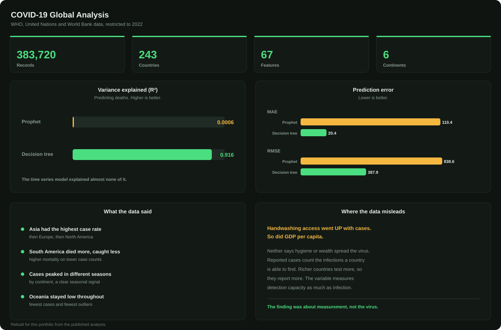

CASE STUDY · EXPLORATORY ANALYSIS AND MODELLING
Across 243 countries the data said two things that cannot be true. The more handwashing facilities a country had, the more cases it reported. The richer it was, the more cases it reported. Neither finding is about the virus. Reported cases count the infections a country is able to find, and richer countries test more. Separating what this data said about COVID from what it said about testing was most of the work.
383,720 records across 243 countries and 6 continents, with 67 features per row, drawn from the WHO Coronavirus Dashboard, the United Nations and the World Bank. Alongside cases and deaths it carries vaccination coverage, access to handwashing facilities, GDP per capita and the Human Development Index, which is what makes it possible to ask why outcomes differed rather than only by how much.
Four cleaning decisions shaped everything after them:
Entries like "high income" are groupings, not countries. Left in, they double count every country inside them.
Derived from hemisphere, so a July reading in Argentina is compared as winter rather than as summer.
COVID figures are revised continuously. Fixing the period makes the analysis reproducible rather than a moving target.
The decision I would change. More on that at the end.
Plotting access to handwashing facilities against total cases per million produced the opposite of the expected relationship. Countries with better hygiene infrastructure reported more cases, not fewer. GDP per capita against cases per million showed no clean linear trend either.
The temptation is to report both as findings. They are not. A confirmed case requires a test, so the case count measures a country's capacity to detect infections at least as much as the number of infections. Wealthier countries test more, report more consistently, and therefore record higher case numbers from the same underlying spread. Hygiene access and GDP are both standing in for development, and development is standing in for detection.
That reading changes what the variable is usable for. Anything built on reported cases is partly modelling a country's health reporting system, and the honest move is to say so rather than publish a correlation that implies soap spreads the virus.

I tested two approaches against the same target. Prophet treats deaths as a time series and predicts from the date. A decision tree regressor predicts from the features.
| Metric | Prophet | Decision tree |
|---|---|---|
| MAE | 110.378 | 20.426 |
| RMSE | 838.581 | 387.911 |
| R² | 0.000565 | 0.916 |
Prophet's average error looks tolerable in isolation. Its R² of 0.000565 says the rest: it explained essentially none of the variation around the mean. Knowing the date tells you almost nothing about how many people died that day. The decision tree cut average error by more than five times and explained 92% of the variance, because the answer was in the country level features rather than in the calendar.
The useful lesson is not that one library beat another. It is that a weak result from a time series model was evidence about the problem, not a reason to tune the model harder.
The analysis was written up and published on Medium as Behind the Curve: Understanding COVID-19 Through Data, co-written with two collaborators.